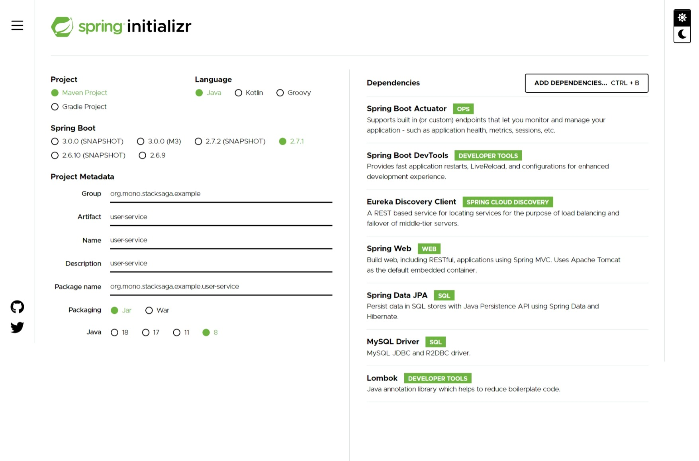

Overview Last updated: 2019-06-01
In the previous two articles, we have successfully created the eureka-server and the order-service. now we are going to create one of next microservices. the next service which we are going to implement is user-service. in the user-service we want to have two endpoints for execute the place-order according the use-case.
The following endpoints will be created in this part
-
GET
/user-service/user/active -
PUT
/user-service/user/point
Creating user-service.
Visit to the spring initializer and create the project by adding the following dependencies.
Database
There is one table called ss_user in th user-service-db. in the user table, contents
the
user basic details and
the points count the user have been collecting upon their purchasing.
(you don't want to creat the database manually. because, spring-data-jpa will create the
database and the tables when start the project.)
Implementation of user-service
Configuration properties
same as the order-service, we have to put our properties in the application.yml
file.
application.yml
user-service > src/main/resources/application.ymlAnnotate the main class
for now, we have been using the only eureka client in this project. therefore, one and only
annotation for main class is @EnableEurekaClient.
Entity classes
to access the database, we have to create the entity classes same as the before article. in the
user-service microservice's database we have only one table called ss_user. let's
create the UserEntity.class
Repository classes of user-service
To access the UserEntity.class we want to have a repository called UserRepository.class
UserRepository.class
user-service > org/mono/stacksaga/example/userservice/repository/UserRepository.javaService classes of user-service
To access the UserRepository.class we want to have a service called UserService.class
UserService.class
user-service > org/mono/stacksaga/example/userservice/service/UserService.javaController classes of user-service
now we are going to create the endpoints for check user and increment the user points. we create
two separate controller classes for those endpoints named
UserStatusController.class and UserPointsController.class
before creating the controller class we are going to create the response dto object for transfer the data through the endpoint.
UserIsActiveResponseBody.class
user-service > org/mono/stacksaga/example/userservice/dto/UserIsActiveResponseBody.javaNow we are going to create our UserStatusController controller by using the response body class that created above.
UserStatusController.class
user-service > org/mono/stacksaga/example/userservice/controller/UserStatusController.javaUserPointsController.class
user-service > org/mono/stacksaga/example/userservice/controller/UserPointsController.javadue to the testing application we have not implemented all the endpoints here. therefore, for the
users are added by using the initial SQL script in user-service. put that file in the resources
folder.
import.sql
user-service > src/main/resources/import.sqlAfter all, The user-server project folder and file structure like below.
└───main
├───java
│ └───org
│ └───mono
│ └───stacksaga
│ └───example
│ └───userservice
│ │ UserServiceApplication.java
│ │
│ ├───controller
│ │ UserReputationController.java
│ │ UserStatusController.java
│ │
│ ├───dto
│ │ UserIsActiveResponseBody.java
│ │
│ ├───entity
│ │ UserEntity.java
│ │
│ ├───repository
│ │ UserRepository.java
│ │
│ └───service
│ UserService.java
│
└───resources
│ application.yml
│ import.sql
│
├───static
└───templates